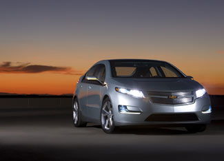

General Motors (GM) is preparing to launch its extended-range electric vehicle, the Chevy Volt, in late 2010, and communities that want to help test the vehicle will need to be "plug-in ready."
According to GM, being plug-in ready includes installing public and workplace charging infrastructures, setting consumer-friendly electricity rates, offering renewable electricity options, and adjusting codes and permitting rules to encourage vehicle charging.
Local governments and corporations can also commit to purchasing plug-in vehicles, and they can offer incentives to make the technology more affordable to consumers. Other incentives, such as access to high-occupancy vehicle lanes, are also a plus.
GM plans to test the vehicles in San Francisco, Washington, D.C. and other plug-in-ready communities.
The Chevy Volt was named the winner of the 2009 Green Car Vision Award at the Washington Auto Show, beating out the fuel-cell-powered Honda FCX Clarity and the plug-in hybrid Fisker Karma, as well as two all-electric cars: the Mini E and the Mitsubishi i-MiEV.
Although GM is charging ahead with its plans to launch the Chevy Volt, the company announced in December that it will delay construction of a manufacturing plant in Flint, Mich., that was slated to produce the 1.4-liter engines for the Volt and the Chevy Cruze. Last week, the company also suspended its construction contracts for the Flint Engine Plant. GM says its plans for the engine plant have not changed, but the company's management continues to keep the plant construction on hold, and the construction contracts were suspended to keep costs down.
GM is also working with the Electric Power Research Institute and a coalition of more than 40 utilities to address the commercialization of plug-in electric vehicles. The company is helping to create standards for the electric vehicle charging interface.
|
 GENERAL MOTORS When it's time to recharge, drivers of the Chevy Volt can simply plug the car in to a standard electrical outlet. |
|
|